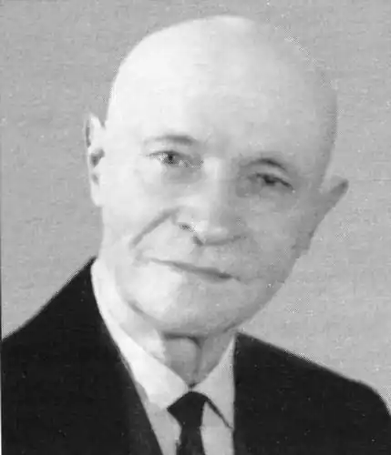

Микита ГОДОВАНЕЦЬ
Годованець Микита Павлович народився 26 вересня 1893 року в с.Вікнина Тернівської волості Кам'янець-Подільської губернії (нині — Гайворонський район Кіровоградської області) в селянській сім'ї. Після закінчення Степашанської вчительської школи навчався на дворічних курсах з підготовки до університету, вчителював у церковно-парафіяльних школах сіл Орлівка та Бубнівка на Поділлі. В 1914-1918 роках перебував не військовій службі. Повернувшись до рідних місць, деякий час вчителював по селах, а затим став працювати в редакціях газет "Червоний край" (Вінниця) та "Радянська Волинь" (Житомир).
Перші вірші Годованця з'явилися друком 1913 року на сторінках київського тижневика "Маяк". Низка поезій побачила світ у газеті "Свободное слово" (Ревель) у 1917 році. В його перекладі політвідділ 41-ої стрілецької дивізії Червоної Армії в 1920 році видав збірочку Дем'яна Бєдного "Байки і пісні". Перша книжка оригінальних байок "Незаможник Клим" вийшла друком у 1927 році. Загадом на межі 20-х-30-х років він видав близько десятка невеличких обсягом книжечок, що несли переважно мотиви агітаційні, пов'язані з тогочасними завданнями утвердження нового в господарюванні, побуті, культурі. 31 січня 1937 року Микиту Годованця було заарештовано і за постановою особливої наради при НКВС від 13 червня того ж року вислано на Середню Колиму, де він пробув до 1947 року. Аж через десять літ, 11 вересня 1957 року, дістав офіційну реабілітацію — довідкою військового трибуналу Київського військового округу засвідчувалося, що постанову особливої наради від 13.VІІ.1937 року "скасовано і справу припинено". Оселившись у Кам'янці-Подільському, Микита Годованець віддається активній літературній роботі. Пише оригінальні байки, здійснює переклади і переспіви, вивчає досвід української класичної, російської, і загалом європейської байки, подає практичну допомогу молодим байкарям, проводячи з ними в Кам'янці-Подільському творчі семінари. Помітним внеском досвідченого митця в розвиток української байки стали його книги "Байки" (1957), "Заяча математика" (1961), "Конвалія і Лопухи" (1966), "Талановита Тріска" (1967). Тривалий час Годованець трудився над художнім освоєнням байки античних часів, епохи Відродження, творчої спадщини видатних західноєвропейських майстрів цього жанру. Його праця увінчалася виданням книг "Ріка мудрості. Байки за Езопом" (1964), "Веселий педант" (1965), "Байки зарубіжних байкарів у переспівах та перекладах Микити Годованця" (1973). Помер 27 серпня 1974 року. Іван Зуб ЛУ 28 (4437) 11.07.1991